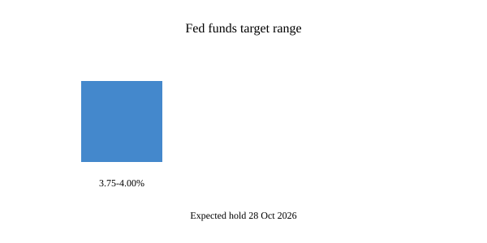

Washington · monetary policy · 28 October 2026
Federal Reserve is expected to hold its benchmark rate steady in the 3.75–4.00 percent range on 28 October.
.jpg)
What is agreed across desks
The Federal Open Market Committee meets on 27–28 October. Markets and forecasters assign roughly a 90 percent probability that the Committee will leave the federal funds target range unchanged at 3.75–4.00 percent. That range was set by a 25-basis-point increase in September, the first hike since 2023. Reuters, AP, CNBC and others report that inflation remains above the Committee’s 2 percent longer-run goal and that officials have indicated patience after the September move. No Summary of Economic Projections or updated dot plot is scheduled for this meeting. The decision is due at 2 p.m. Eastern on 28 October; Chair Kevin Warsh will hold a press conference afterward. The meeting falls less than a week before U.S. midterm elections on 3 November.
Traders using CME FedWatch priced the hold at about 90 percent on the morning of 28 October. Economists polled by Reuters largely expected the same outcome and saw a higher chance of another increase in December. The checkable facts are the current target range, the September hike, the timing of the meeting, and the market-implied probability. The actual vote and statement text are not yet public.
What is only a quote or expectation
Administration officials and some market commentary have described the hold as appropriate given recent data. President Trump has previously called for lower rates. Those are preferences or forecasts. They are not the Committee’s decision. Warsh’s prepared remarks and answers will contain the official framing once released. Until the statement appears, any description of the outcome is an expectation, not a fact about the vote.
Mechanism a reader needs
The federal funds rate is the overnight rate at which depository institutions lend reserve balances to one another. The FOMC sets a target range; the Federal Reserve Bank of New York implements it through open-market operations. A hold means the range stays where it is. The Committee’s dual mandate is maximum employment and price stability. After the Iran-related energy shock and subsequent inflation, the September hike was presented as a response to persistent price pressures. A skip in October does not rule out further tightening; it simply defers the next decision. Because no new projections are published this meeting, the press conference is the main channel for any signal about December.
Interest-rate decisions affect borrowing costs for households, firms and governments with a lag. Mortgage rates, corporate bond yields and bank loan pricing all respond to the path of the funds rate and to expectations of future moves. The midterm calendar does not change the Committee’s formal mandate, but the proximity of the election is a fact of timing that outlets note. Independence is a design feature of the Federal Reserve Act; public statements by elected officials about preferred rates are political speech, not binding instructions.
Inflation data released before the meeting showed prices still above target on both headline and core measures. Employment data have been mixed. Those prints are public; the Committee’s assessment of them will be in the statement and the press conference. Until those documents exist, “expected hold” is a description of market pricing and economist surveys, not of the vote itself.
What this story is not
It is not a completed decision. It is not evidence that any particular official has already cast a vote. It is not a prediction of the December path. The photograph is an exterior of the Eccles Building; it is not a picture of the meeting room or of Chair Warsh on 28 October.

Source articles and scores
| Outlet | Headline | T | N | C |
|---|---|---|---|---|
| Reuters | Fed likely to go into wait-and-see mode on rates | 96 | 0 | 100 |
| AP | Federal Reserve likely to skip rate hike despite elevated inflation | 95 | 0 | 100 |
| BBC | Fed set to hold rates steady before midterms | 92 | 0 | 98 |
Images: Wikimedia Commons type photograph of the Eccles Building. Caption states it is a location still, not the meeting. onerror falls back to committed SVG. No news-agency pixels used as the sole source.